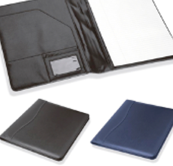

Carpeta Coatlicue

Carpeta que además de servir para guardar información, cuenta con una pantalla LCD que muestra notificaciones, recordatorios o información ingresada por el usuario.
Las carpetas son un producto que ha tenido un largo ciclo de vida y sin duda lo puede seguir teniendolo si nos adaptamos a la tecnología que evoluciona día con día, sin perder la esencia clásica del producto.
Características del producto
Carpeta Coatlicue tamaño carta con botón de seguridad. Fabricación realizada con material PET 100% reciclado.
Funciones Inteligentes disponibles:
- Sincronización con aplicación móvil
- Respaldo en la nube
- Sistema de notificaciones